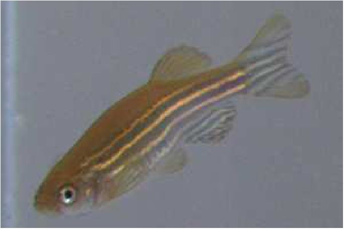

Joakim Bruslund Haurum*, Anastasija Karpova*, Malte Pedersen, Stefan Hein Bengtson, Thomas B. Moeslund
WACV Workshops, 2020
code / dataset / bibtex

Malte Pedersen, Joakim Bruslund Haurum, Thomas B. Moeslund, Marianne Nyegaard
NLDL, 2022
bibtex

Joakim Bruslund Haurum, Chris H. Bahnsen, Malte Pedersen, Thomas B. Moeslund
Water, 2020
code / bibtex

Jakob S. Lauridsen, Julius A. G. Graasmé, Malte Pedersen, David G. Jensen, Søren Holm, Thomas B. Moeslund
VISAPP, 2019
bibtex
Malte Pedersen, Joakim B. Haurum, Rikke Gade, Thomas B. Moeslund, Niels Madsen
CVPR Workshop on Automated Analysis of Marine Video for Environmental Monitoring (AAMVEM), 2019
project page / code / dataset / bibtex

Malte Pedersen, Stefan Bengtson, Rikke Gade, Niels Madsen, Thomas B. Moeslund
CVPR Workshop on Automated Analysis of Marine Video for Environmental Monitoring (AAMVEM), 2018
code / bibtex

Mathias Vestergaard, Stefan Bengtson, Malte Pedersen, Christian Rankl, Thomas B. Moeslund
VISAPP, 2016
code / dataset / bibtex